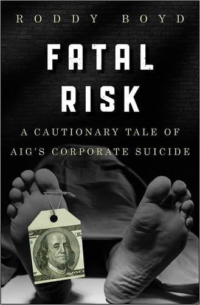

罗迪·博伊德（Roddy Boyd）是美国调查性财经记者，长期供职于《纽约邮报》与《财富》杂志，以深挖华尔街内幕著称。《致命风险》出版于2011年，是首部全面记录美国国际集团（AIG）在2008年金融危机中崩溃始末的著作。博伊德历时多年，采访了从汉克·格林伯格（Maurice "Hank" Greenberg）到美联储官员的数十位当事人，掌握了大量第一手材料。本书出版后入围《金融时报》与高盛年度商业书籍大奖长名单，被视为理解2008年金融海啸绕不开的文本之一。
全书的叙事核心，是AIG如何从一家以严苛风控著称的保险巨头，一步步蜕变为一台不受约束的金融衍生品赌博机器。格林伯格用近四十年时间将AIG打造成全球最大的保险与金融服务集团，AAA评级背后是他对风险近乎偏执的掌控。然而2005年格林伯格在监管压力下被迫离职后，继任管理层对公司旗下金融产品部门（AIG Financial Products）所承接的天量信用违约互换（CDS）敞口几乎一无所知。博伊德详细追踪了金融产品部门负责人约瑟夫·卡萨诺（Joseph Cassano）如何在无人监督的状态下积累了数千亿美元的抵押贷款相关衍生品保险敞口——这些合约在地产繁荣期貌似无风险，却在市场翻转时成为引爆系统的炸弹。书中还对流行叙事提出了挑战：博伊德认为，将AIG崩溃归咎于高盛追加保证金的说法过于简单化，公司的根本失败在于治理结构和风险文化的全面瓦解。
《致命风险》在出版后获得了金融界和新闻界的广泛认可。《华尔街日报》评论称，这本书"比任何此前的叙述都更深刻地还原了AIG如何一步步走向深渊"。传奇做空者吉姆·查诺斯（Jim Chanos）是博伊德的重要受访者之一，并对本书研究的深度给予了高度评价。知名投资人惠特尼·蒂尔森（Whitney Tilson）在其推荐书单中将此书列为理解金融危机机制的必读文本，认为它"让读者真正理解了风险如何在一个机构中悄然积聚，直到无可挽回"。
对于关注保险业、公司治理与风险管理的读者，《致命风险》提供了一个无可替代的案例研究。它揭示了一个深刻的商业规律：任何一家机构——无论规模多大、历史多久——一旦将短期盈利冲动置于风险文化之上，便已埋下自毁的种子。AIG并非死于外部冲击，而是死于内部对风险的漠视与对复杂性的傲慢。这一教训对于今天任何从事金融、保险或企业管理的人，依然有着直接的现实意义。